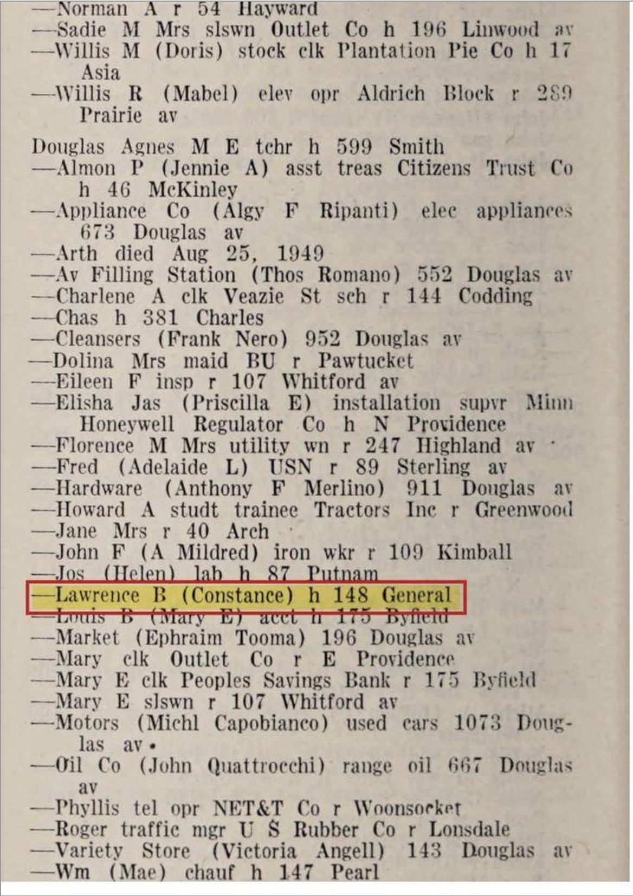

Item 43 · 1950
Providence city directory, 1950, page 214
The document

This copy carries yellow highlighting or red outlining added for the book site. It is not on the original.
Tap an image to open it full size.
Transcription, word for word
Everything as written, including misspellings. [?] marks an uncertain reading. Struck-through words are marked as struck through. Notes in square brackets describe the page and are not part of it.
[A section of a directory page. Every line shown on the copy is given word for word.] —Norman A r 54 Hayward —Sadie M Mrs slswn Outlet Co h 196 Linwood av —Willis M (Doris) stock clk Plantation Pie Co h 17 Asia —Willis R (Mabel) elev opr Aldrich Block r 289 Prairie av Douglas Agnes M E tchr h 599 Smith —Almon P (Jennie A) asst treas Citizens Trust Co h 46 McKinley —Appliance Co (Algy F Ripanti) elec appliances 673 Douglas av —Arth died Aug 25, 1949 —Av Filling Station (Thos Romano) 552 Douglas av —Charlene A clk Veazie St sch r 144 Codding —Chas h 381 Charles —Cleansers (Frank Nero) 952 Douglas av —Dolina Mrs maid BU r Pawtucket —Eileen F insp r 107 Whitford av —Elisha Jas (Priscilla E) installation supvr Minn Honeywell Regulator Co h N Providence —Florence M Mrs utility wn r 247 Highland av —Fred (Adelaide L) USN r 89 Sterling av —Hardware (Anthony F Merlino) 911 Douglas av —Howard A studt trainee Tractors Inc r Greenwood —Jane Mrs r 40 Arch —John F (A Mildred) iron wkr r 109 Kimball —Jos (Helen) lab h 87 Putnam —Lawrence B (Constance) h 148 General —Louis B (Mary E) acct h 175 Byfield —Market (Ephraim Tooma) 196 Douglas av —Mary clk Outlet Co r E Providence —Mary E clk Peoples Savings Bank r 175 Byfield —Mary E slswn r 107 Whitford av —Motors (Michl Capobianco) used cars 1073 Douglas av —Oil Co (John Quattrocchi) range oil 667 Douglas av —Phyllis tel opr NET&T Co r Woonsocket —Roger traffic mgr U S Rubber Co r Lonsdale —Variety Store (Victoria Angell) 143 Douglas av —Wm (Mae) chauf h 147 Pearl